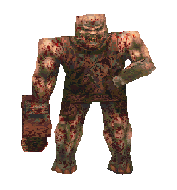

NOTE: This site is non-indexed, so you can only view this site if you've been given the URL.
ABOUT ME
Hey there, My name's ArchLiver. I'm the wee' lad who owns this site. I'm very much into computers and technical stuff, which includes web development. I've made tons of websites in the past, and I've got even more HTML files just laying around, so web developement is especially a favourite hobby of mine. I'm also a big fan of 90s first person shooters, with my favourites being DOOM, Blood, Duke Nukem 3D and Quake. I'm especially a big fan of DOOM and Quake's multiplayer, and out of all the DOOM WADs I've made, I'd say 50% of them are deathmatch maps. When I'm not doing the above, I'm usually either watching movies, listening to music or occasionally going broke at the servo. As for the first 2 I mentioned, I listen to a lot of Industrial and Industrial-Adjacent music and my favourite band is Nine Inch Nails. As for movies, my favourites are the Crow, Full Metal Jacket, Lost Highway and Saw II. As a person, I'm not very political, as I loathe the unnecessary hostility that comes with a lot political discussion. However, I believe that I am very confident in what I stand for and what I believe, so that's probably the most political thing I can say at the moment. As time goes on and I further expand this site, you'll most definitely learn a lot more about me if you pay enough attention, but for now, that's all I can say. Have a great day!
(Hey, that rhymed!)

archliver - 2026